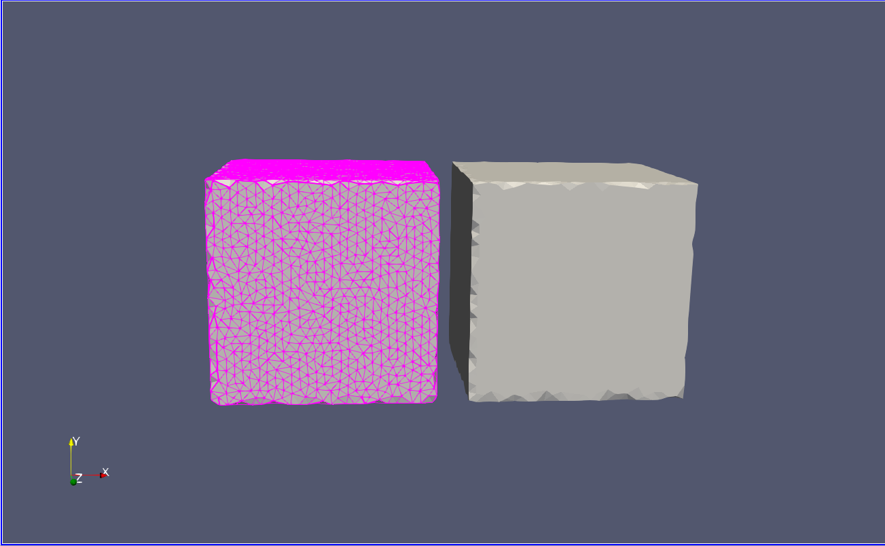
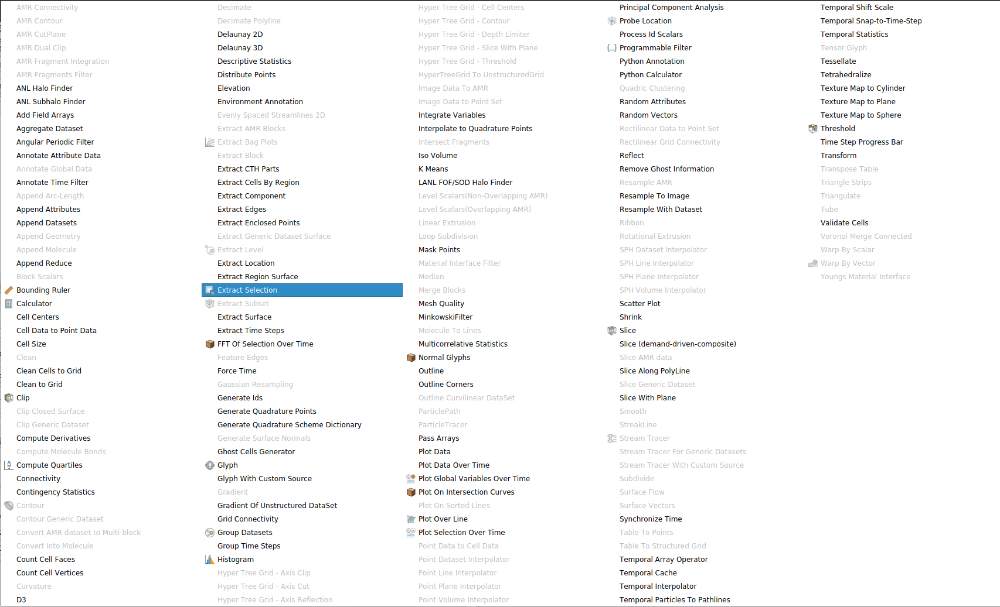
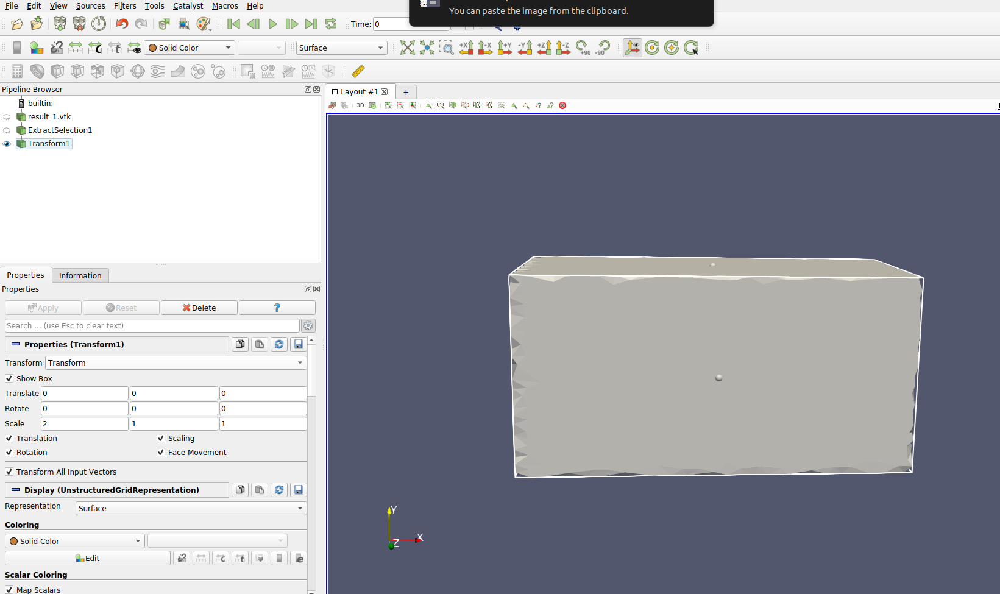
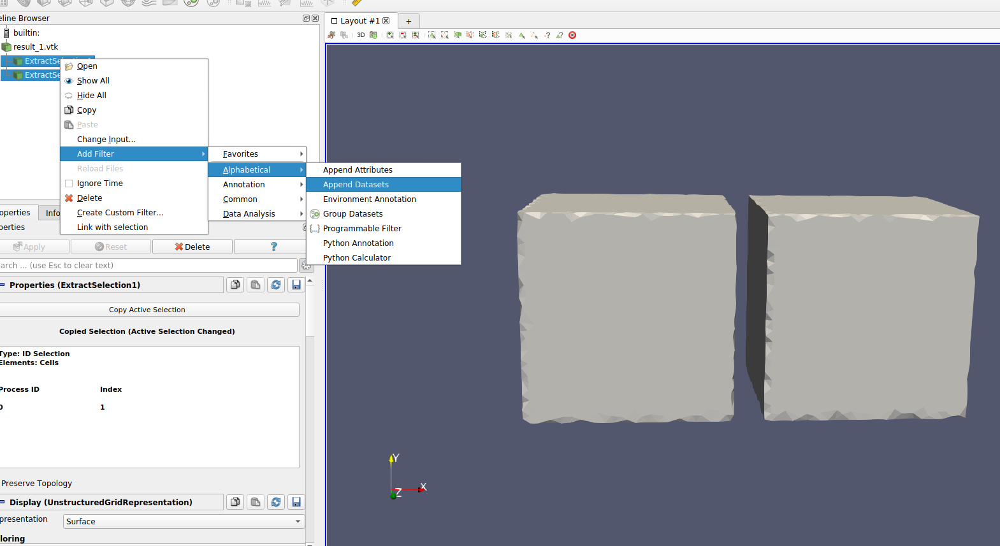
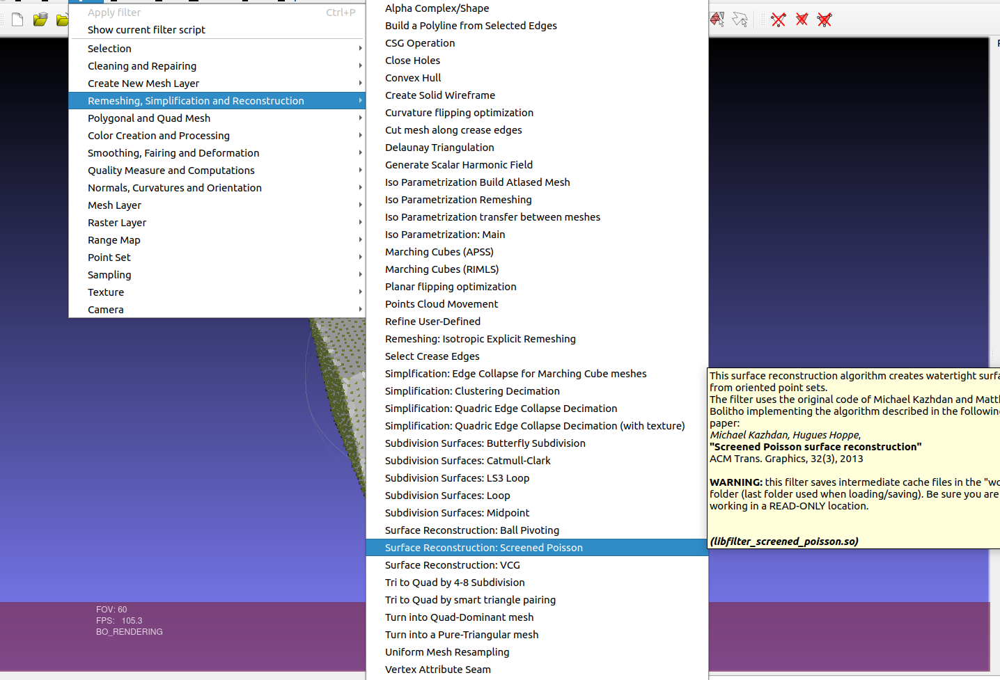
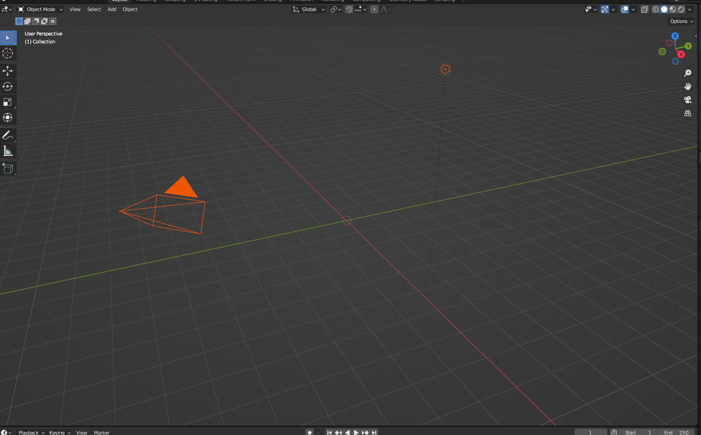
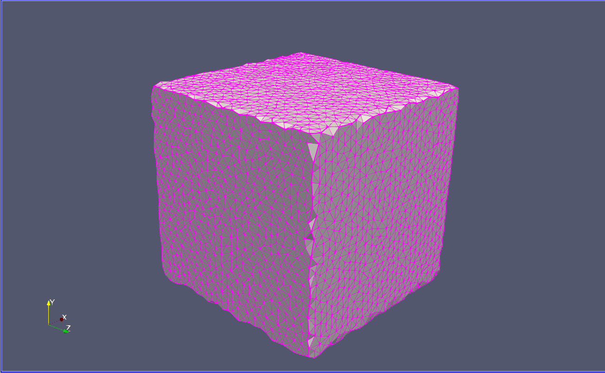
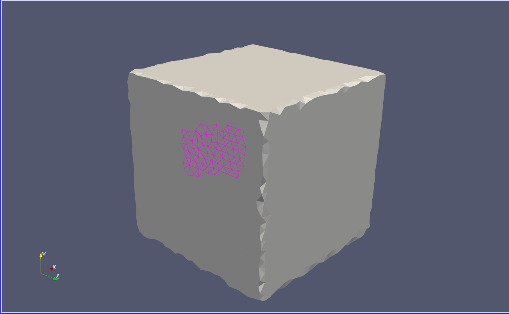

Input meshes#
The input mesh holds the initial geometry of a simulation: the surface of every cell
and the cell type of each one. Its path is given by input_mesh_file_path in the
parameter file (Parameter file reference). This chapter describes the file
format, the meshes shipped in data/input_meshes/, and how to build a new mesh.
File format#
SimuCell3D reads the legacy VTK format in ASCII, as an unstructured grid in which every
biological cell is one polyhedron (VTK cell type 42). A minimal file with two cubic cells,
taken from data/input_meshes/2_cubes.vtk (metadata lines removed):
# vtk DataFile Version 4.2
vtk output
ASCII
DATASET UNSTRUCTURED_GRID
POINTS 16 float
5e-07 0 0 7.5e-06 0 0 7.5e-06 0 7e-06
5e-07 0 7e-06 5e-07 7e-06 0 7.5e-06 7e-06 0
5e-07 7e-06 7e-06 7.5e-06 7e-06 7e-06 8e-06 0 0
1.5e-05 0 0 1.5e-05 0 7e-06 8e-06 0 7e-06
8e-06 7e-06 0 1.5e-05 7e-06 0 8e-06 7e-06 7e-06
1.5e-05 7e-06 7e-06
CELLS 2 100
49 12 3 0 1 3 3 2 3 1 3 0 4 1 3 5 1 4 3 0 3 4 3 6 4 3 3 1 5 2 3 7 2 5 3 5 4 7 3 6 7 4 3 3 2 6 3 7 6 2
49 12 3 8 9 11 3 10 11 9 3 8 12 9 3 13 9 12 3 8 11 12 3 14 12 11 3 9 13 10 3 15 10 13 3 13 12 15 3 14 15 12 3 11 10 14 3 15 14 10
CELL_TYPES 2
42
42
CELL_DATA 2
FIELD FieldData 1
cell_type_id 1 2 int
0 0
The sections are:
# vtk DataFile Version 4.2The version line is required. A version other than 4.2 is accepted with a warning.
POINTS <n> float(ordouble)The node coordinates, three numbers per node, in metres. Line breaks are free. The shipped meshes have cells about 10 to 20 micrometres across, so coordinates are of the order of \(10^{-5}\).
CELLS <number of cells> <size>One line per cell. The first integer is the number of integers that follow on the line, the second is the number of faces of the cell; then each face is written as its number of nodes followed by the node indices (0-based, into
POINTS). In the example, each cube has 12 triangles: \(1 + 12 \times 4 = 49\) integers. Each cell must be on a single line; the reader splits this section by line.CELL_TYPES <number of cells>One
42(polyhedron) per cell. Any other value stops the run.cell_type_idAn integer array with one value per cell, in a
CELL_DATAfield. It selects the<cell_type>block of the parameter file by position: 0 is the first block in the file, 1 the second, and so on (see Cell types and the input mesh). It is not the cell class; the class comes from that block’sglobal_cell_id. The array is required. It may be accompanied by other arrays in the sameFIELD.
Requirements on the cell surfaces#
Each cell must be a closed surface without boundary in which every edge is shared by exactly two faces (a manifold surface). A cell that fails this check stops the run with “The surface of cell N is not properly triangulated.”
Faces may have any number of nodes if
perform_initial_triangulationis 1: the surfaces are then re-meshed at the start with edge lengths betweenmin_edge_lengthand three times that value. Ifperform_initial_triangulationis 0, every face must be a triangle, and the triangles should already have edge lengths close to that range.The orientation of the faces does not matter: when a cell is created, its faces are re-oriented so that their normals point outward.
Cells may share points in the file. Each cell receives its own copy of the nodes it uses, so cells that touch in the file are separate surfaces in the simulation.
Cells should not overlap. SimuCell3D does not check this.
Shipped meshes#
All meshes are in data/input_meshes/. Counts are from the files; “polygons” means that the
faces are quadrilaterals and pentagons, so the mesh needs perform_initial_triangulation 1.
File |
Cells |
|
Faces |
Used by |
|---|---|---|---|---|
|
434 |
0 (432), 1 (1), 2 (1) |
triangles |
|
|
50 |
0 (48), 1 (1), 2 (1) |
triangles |
|
|
118 |
0 |
triangles |
|
|
192 |
0 |
triangles |
|
|
1 |
0 |
triangles |
|
|
1 |
0 |
triangles |
|
|
1 |
0 |
triangles |
|
|
1 |
0 |
triangles |
|
|
2 |
0 |
triangles |
|
|
4 |
0 |
triangles |
|
|
3 |
0 |
triangles |
|
|
2 |
0 (1), 1 (1) |
triangles |
|
|
13 |
0 (12), 2 (1) |
polygons |
|
|
13 |
0 (12), 2 (1) |
triangles |
|
|
16 |
0 to 15, one cell each |
triangles |
The embryo_*.vtk meshes give every cell its own cell_type_id, so a parameter file for them
needs 16 <cell_type> blocks. No shipped parameter file uses them.
In fig_3_vesicle.vtk and fig_1_vesicle.vtk, cell_type_id 1 and 2 select the second and
third <cell_type> blocks, which in the shipped files are the ECM cell and the lumen cell.
Building a mesh#
A new mesh is usually assembled from existing cells or drawn in a 3D modelling program, then converted to the format above.
ParaView#
ParaView opens the legacy VTK files directly and can assemble a tissue from cells of existing meshes:
Open a mesh (for example a shipped one, or the
cell_data/result_<n>.vtkoutput of a previous run; see Reusing simulation output).Select a cell with the Select Cells On tool and click on it.

Selecting one cell in ParaView.#
Extract it with the Extract Selection filter.

The selected cell extracted into its own dataset.#
Move, rotate or scale it with the Transform filter.

Placing the extracted cell with the Transform filter.#
Combine several datasets into one with Append Datasets, then save the result with File > Save Data as a legacy VTK file in ASCII.

Combining cells into one mesh with Append Datasets.#
Check that the saved file still contains the cell_type_id array and that each cell is one
polyhedron (see Checking a mesh).
MeshLab and Blender#
MeshLab has filters to smooth, simplify and re-mesh surfaces, which helps to prepare cell shapes that come from imaging data.

MeshLab filters for cleaning and re-meshing surfaces.#
Blender is suited to drawing cells from scratch: modelling, sculpting and positioning closed surfaces.

Modelling cell surfaces in Blender.#
Both programs export STL, PLY or OBJ files. These formats store all triangles of a scene as one list, without grouping them by cell, so they have to be converted.
Converting STL, PLY and OBJ files#
scripts/mesh_conversion/convert_to_cell_mesh.py groups the triangles of a mesh into cells
and writes a legacy VTK file with one polyhedron per cell. It reads .stl, .ply, .obj,
.vtp, .vtu and legacy .vtk files and needs the Python packages vtk and numpy:
$ pip install vtk numpy
$ python3 scripts/mesh_conversion/convert_to_cell_mesh.py tissue.stl tissue.vtk
The script assigns faces to cells by connectivity: every connected set of triangles becomes one cell. Cells that share a node or an edge in the input are therefore merged into one cell; keep a gap between cell surfaces before converting.
The converted file has no cell_type_id array, which SimuCell3D requires. Append one; for
example, to give every cell cell_type_id 0:
$ n=$(grep -m1 '^CELLS' tissue.vtk | cut -d' ' -f2)
$ { printf '\nCELL_DATA %s\nFIELD FieldData 1\ncell_type_id 1 %s int\n' "$n" "$n"; yes 0 | head -n "$n"; } >> tissue.vtk
For several cell types, write the values in the order of the cells in the CELLS section.
Reusing simulation output#
The files cell_data/result_<n>.vtk written by a run (Output files)
have the input format: one polyhedron per cell on one line, triangulated faces, and a
cell_type_id array. They can be used as the input mesh of a new run, for example to start
from a relaxed tissue. Two points need care:
The output
cell_type_idis theglobal_cell_idof each cell’s type, while the inputcell_type_idis a position in the parameter file. The two agree only if the<cell_type>blocks of the new parameter file are in the order of theirglobal_cell_id(0, 1, 2, …), as in all shipped files.The output does not store growth rates or target volumes in a form that the reader uses. Each cell starts with its current volume as target volume and draws a new growth rate and division volume from the distributions of its cell type.
Checking a mesh#
Open the file in ParaView, choose the cell-selection tool and click on a cell. If the file is correct, the whole cell is highlighted:

Correct mesh: the selection picks a whole cell.#
If only one triangle is highlighted, each face is a separate VTK cell and the file has to be converted:

Incorrect mesh: the selection picks a single triangle.#
Colour the mesh by cell_type_id to check the cell types. The quickest test of a new mesh is
a short run: set simulation_duration to a few time steps and check that the run starts and
writes cell_data/result_1.vtk.
Error messages#
Message |
Cause |
|---|---|
|
Neither the path as given nor the path relative to the source directory exists (see Paths). |
|
Not a legacy VTK file. |
|
|
|
A |
|
The |
|
A |
|
|
|
Initial triangulation or cell creation failed ten times; the preceding lines give the reason for each attempt. |
See also
Mesh refinement: initial triangulation and the mesh refiner.
Cell classes: the cell classes selected through the cell types.
Visualization: viewing meshes in ParaView.